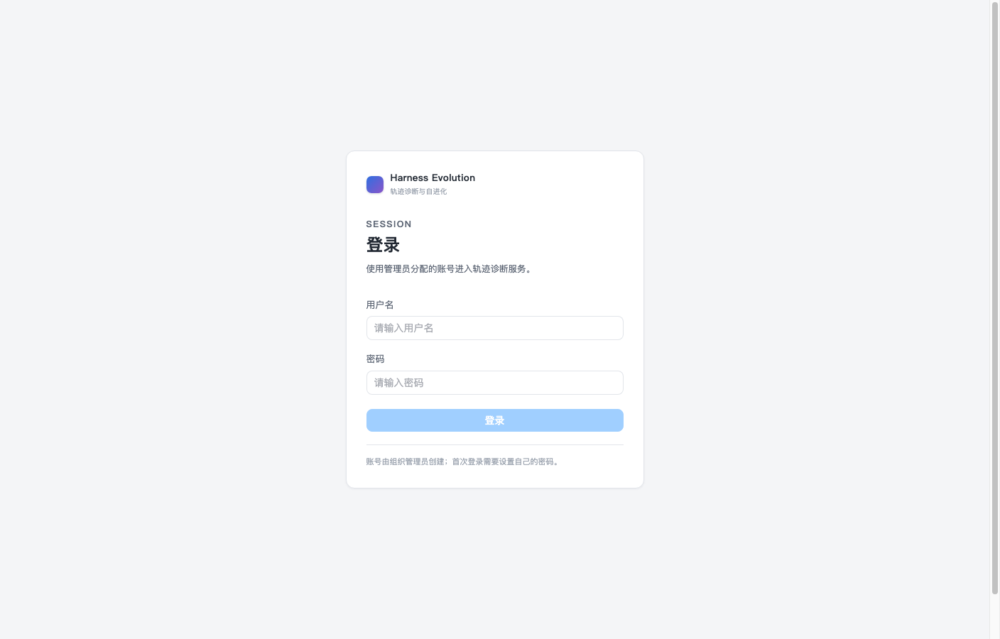
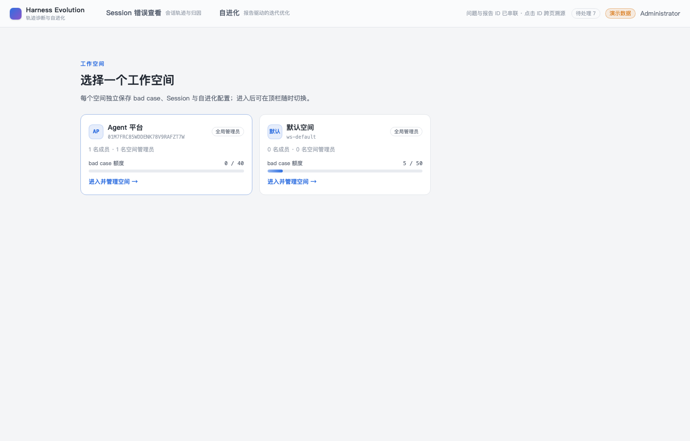
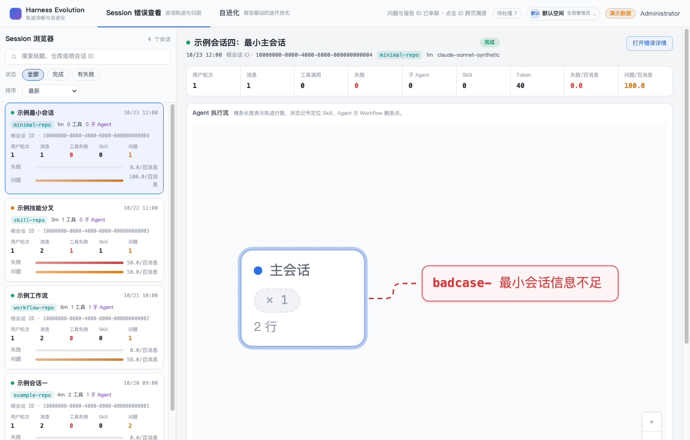
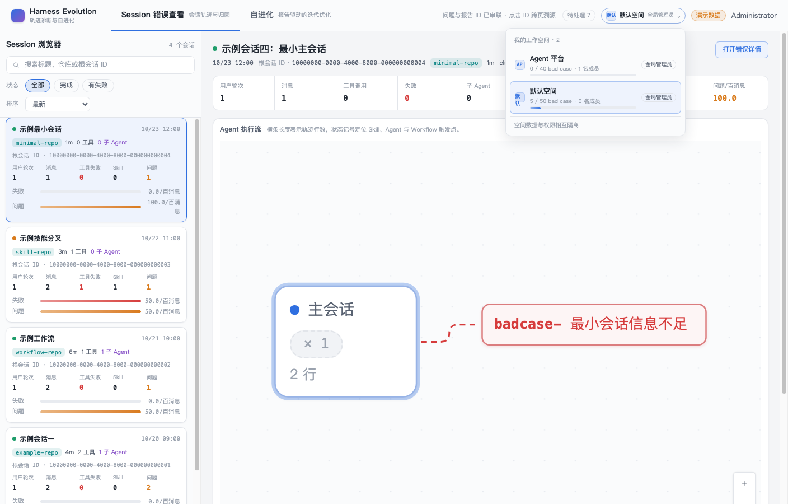
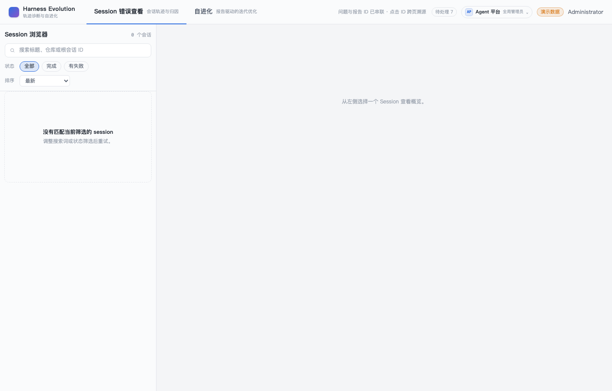
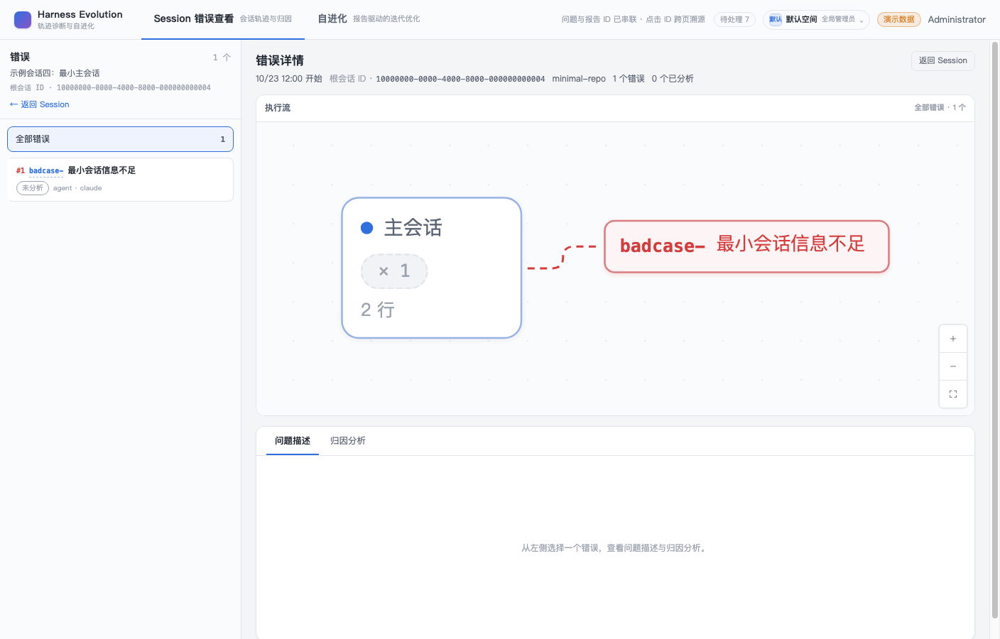

- 代码提交
- 5519a9a（PR #261）
- 分支
- agent/develop-m7-08-b2e3bbf74fc0
- 应用
- harness-evolution web + api（sqlite, demo fixtures）
- 测试方式
- 真实 API + Vite proxy + CDP 无头 Chrome
- 数据
- fixtures:seed（m2-synthetic）与独立临时数据目录
Harness Evolution · M7 身份与空间边界
m7-08 空间壳集成冒烟报告
在真实 API + Vite proxy + 无头 Chrome 环境中验证 /workspaces/:wid 空间壳、空间选择、跨空间缓存隔离、旧深链一次重定向与不可见空间回退。4 条新增浏览器用例、m1/m3/m4/m5/m6 回归与跨栈代理测试全部通过；发现并修复了移动端自进化页横向溢出与测试环境外部表未初始化两个问题。
6冒烟场景
4/4新增空间壳 E2E
6/6跨栈代理集成
0未解决缺陷
Environment and Artifact
2026-11-15 · macOS · Chrome headless · 1408×900 与 390×844Scenario Matrix
6 pass| # | 场景 | 结果 | 说明 | 证据 |
|---|---|---|---|---|
| 01 | 未登录访问空间路由 | PASS | 访问 /workspaces/ws-default/sessions 跳 /login，redirect 参数保留原路径。 | 01-anonymous-login-redirect.png |
| 02 | 空间选择页 | PASS | 两个可见空间各展示名称、角色、used/quota 与成员数，卡片可进入。 | 02-workspace-chooser.png |
| 03 | 空间壳与顶栏切换器 | PASS | Session 浏览器在空间壳内渲染，顶栏显示当前空间、角色与配额入口。 | 03-workspace-sessions.png 04-workspace-picker.png |
| 04 | 切换空间后不复用旧缓存 | PASS | 从默认空间切到空空间后列表为空，不出现旧空间 Session；切回后重新拉取。 | 05-empty-workspace.png |
| 05 | 旧深链一次重定向 | PASS | 旧 /sessions/:sid/errors 替换为 /workspaces/ws-default/...，history.state.replaced=true。 | 06-legacy-deep-link.png |
| 06 | 不可见空间回选择页 | PASS | wid 不在 auth/session 可见空间内时进入 /workspaces?reason=forbidden，并显示无权限提示。 | — |
Issues and Observations
P2 移动端自进化页横向溢出 12pxP2 auth/session 启动依赖外部 bad_cases 表
P3 默认落地页暂为 Session 列表而非总览
P3 归因/探针仍走可见空间并集兼容端点
移动端自进化页横向溢出 12px
- 实际
- 390px 视口下 .evolution-page-frame scrollWidth=402。
- 预期
- scrollWidth 等于 clientWidth，顶栏与内容不横向滚动。
- 根因
- 空间壳 main 改为全宽后，V1 的页面框仍按旧的 1280 居中列做 -12px/宽度 +24px 补偿。
已修复 · 5519a9a
auth/session 启动依赖外部 bad_cases 表
- 实际
- 未 seed 外部表的 E2E/集成环境启动后停在登录页。
- 预期
- 空间壳启动前外部表已初始化；测试环境应显式 bootstrap。
- 根因
- auth/session 的 used 聚合读取外部引导表；m1 与跨栈代理测试原先未 seed。
已修复 · 5519a9a（测试 bootstrap）
默认落地页暂为 Session 列表而非总览
- 实际
- /workspaces/:wid 默认进入 sessions。
- 预期
- 设计 08 §1 的默认落地页是 overview。
- 根因
- overview 属于 m8-04，尚未实现；m7-08 不新建占位页。
已记录 · 待 m8-04
归因/探针仍走可见空间并集兼容端点
- 实际
- bad case 详情已空间化，/analysis 与 /probes 仍是兼容端点。
- 预期
- 空间级归因端点落地后，同一 case 的多空间归因各自隔离。
- 根因
- m7-06 只提供可见空间并集；m7-08 scope 不含 apps/api。
已记录 · Agent Note 欠账
Evidence
6 screenshots





Automated Coverage Assessment
5 areas reviewed| 区域 | 覆盖 | 结论 | 建议 |
|---|---|---|---|
| 路由守卫与旧链接解析 | UT + E2E | router.test.ts 15 条 + auth-flow 3 条；空间壳 E2E 覆盖未登录、不可见空间与一次重定向。 | 保留；每次新增空间路由时补一条守卫断言。 |
| 缓存隔离与页面状态重建 | UT + E2E | queryKeys 前缀、WorkspacePicker 切空间、App RouterView key 均有测试。 | 新增工作空间级资源时沿用 ['ws', wid] 前缀。 |
| 数据端点空间化 | UT + E2E | Session/bad case/evolution/catalog/SSE ticket 均带 wid；m3/m4/m5 回归通过。 | 后端新增空间端点时同步 API 模块与 query key。 |
| 视觉与响应式 | E2E + 截图 | 1408 与 390 两档通过；Before/After 截图已归档。 | m8-04 总览页加入后重跑同一组视口。 |
| 真实外部服务 | 未覆盖 | 使用 sqlite + demo fixtures；未连接真实轨迹服务或生产数据库。 | 发布前按部署 issue 做一次真实环境冒烟。 |
Conclusion
Ready for review · follow-ups tracked空间壳、守卫与缓存隔离在真实浏览器链路中按预期工作；没有未解决的阻断缺陷。两个已修复问题均通过自动化回归覆盖。
- m8-04 交付总览后，把默认落地页从 sessions 切到 overview 并重跑本报告。
- 空间级归因端点落地前，归因只做 wid 缓存隔离与 Session 归属校验。
- 发布前在真实部署上补一次外部表初始化与登录冒烟。
由 dsh-superagent 在 ZTGolem 账号下生成；证据来自真实 API + Vite proxy + 无头 Chrome。